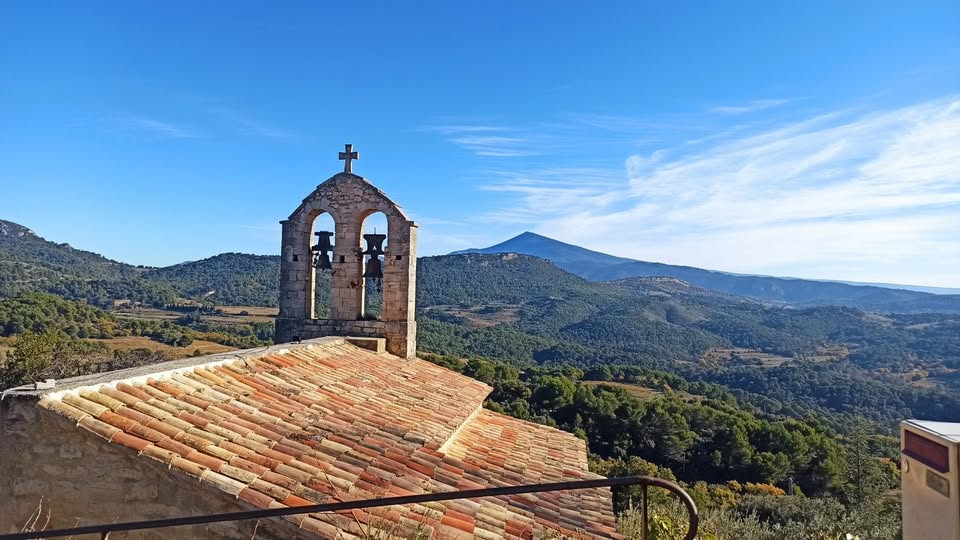
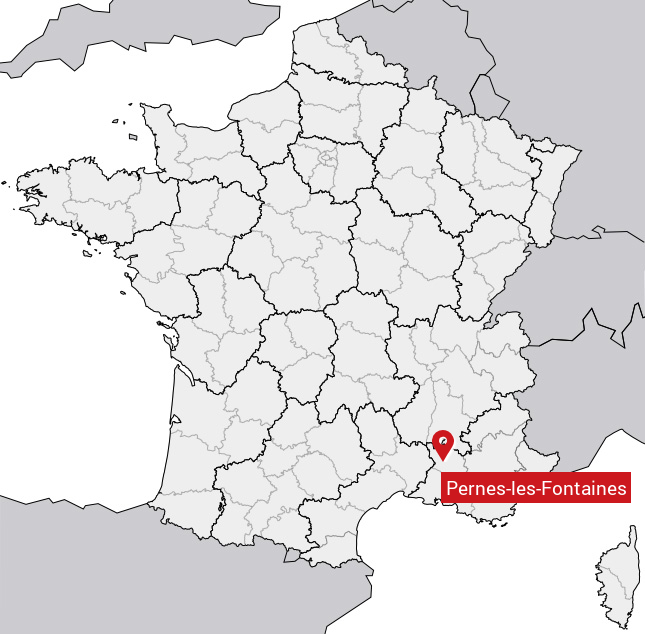

Vaucluse • sites web utiles • réservation directe
Qui sommes-nous ?
Terrain, rédaction, développement
Un seul objectif : des sites et des outils qui servent vraiment votre activité.
Les pieds sur terre
Silicon Vallis s’adresse aux TPE locales : artisans, producteurs, indépendants, gîtes et chambres d’hôtes.
On part de votre réalité (temps, budget, contraintes), puis on construit une V1 simple : pages claires, action évidente, et autonomie.
Vous avez une idée mais vous craignez quelque chose de trop lourd ? On en parle simplement.
Votre interlocuteur

10 ans journaliste
Comprendre les enjeux, expliquer, structurer, rendre clair et concret.

15 ans dirigeant de TPE agricole
Production de spiruline : culture, vente, gestion, contraintes du terrain.

Aujourd’hui, développeur web full-stack
Construire des solutions simples, robustes, et faciles à faire évoluer.
Une aventure humaine
Silicon Vallis est née d’un parcours un peu atypique, celui de Benjamin Masson. Avant de devenir développeur web, il a travaillé comme journaliste spécialisé en agriculture dans la presse nationale, puis comme producteur de spiruline en Vaucluse. Deux expériences très différentes qui lui ont appris à analyser des problèmes concrets, saisir les besoins et chercher des solutions pragmatiques.
Le développement web est venu comme un prolongement naturel : un moyen de concevoir des outils numériques simples, efficaces et réellement utiles. Aujourd’hui, il développe des applications sur mesure, principalement avec Ruby on Rails, en privilégiant des solutions robustes et évolutives.
“Un réseau de développeurs, journalistes et graphistes de très haut niveau rencontrés au fil de mon parcours.”
Son parcours hors du monde purement informatique lui permet d’aborder les projets avec une vision plus large. Il connaît les réalités d’un entrepreneur : contraintes de temps, de budget et d’efficacité. L’objectif n’est pas seulement de produire du code, mais de construire des outils qui répondent à un besoin concret.
La manière de travailler est simple : comprendre d’abord, construire ensuite. Chaque projet commence par un échange pour clarifier les objectifs et éviter la complexité inutile.
Pourquoi c’est un avantage
LocalEntrepreneurs en Vaucluse… Comme vous !

Basés à Pernes-les-Fontaines, nous développons des applications web pour des projets et des entreprises du territoire. Travailler avec un développeur local, c’est pouvoir se rencontrer facilement, échanger autour du projet et ajuster les solutions au fil du temps.
C’est aussi partager une même culture du travail : celle des entrepreneurs et artisans qui connaissent la valeur du temps, de l’effort et du travail bien fait.
Proximité, dialogue direct et compréhension des réalités du terrain permettent de construire des outils numériques utiles, solides et durables.
Notre approche
Écouter : votre activité, vos clients, vos contraintes.
Clarifier : l’offre, les pages, l’action à faire (contact / devis).
Construire : une V1 solide, simple à utiliser et à faire évoluer.
Améliorer : au fil des retours, sans repartir de zéro.
Vous voulez un site utile (ou de la réservation directe) ?
Décrivez votre activité et votre priorité : je vous réponds simplement.